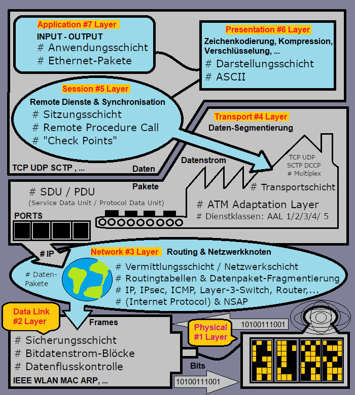
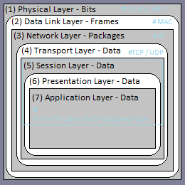

OSI „Open Systems Interconnection“
Das OSI Modell beschreibt wie Daten übermittelt werden.
Es hat 7 Schichten, in denen Daten verkapselt und weiterverkapselt werden.
Die Nummerierung ist aber nicht als Reihenfolge zu verstehen,
da die Informationen in beide Richtungen fließen.
Auch "ISO-OSI-Modell" genannt.
| Layer | Schicht | Funktion |
|---|---|---|
| #1 Physical Layer | Bitübertragungsschicht | Die Bits die durch die Leitungen fließen |
| #2 Data Link Layer | Sicherungsschicht | Übersetzung auf "Hardware-Sprache" |
| #3 Network Layer | Vermittlungsschicht | Netzwerk - Routing |
| #4 Transport Layer | Transportsschicht | Quelle und Ziel - Adressierung |
| #5 Session Layer | Sitzungsschicht | Daten mit Benutzer-Informationen - Metadaten |
| #6 Presentation Layer | Darstellungsschicht | Der ausgeführte Prozess - "sichtbar" |
| #7 Application Layer | Anwendungsschicht | Der ausgeführte Prozess - "unsichtbar" |

×

